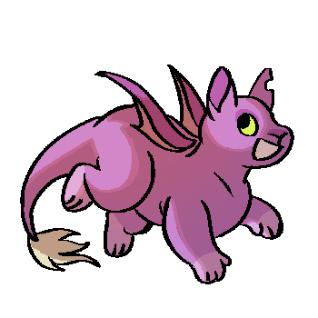

Synopsis
Escape From Abject Reality is a webcomic that was created in September 24th, 2017.
It is
a story about 12 objects who are trapped in a dangerous ‘reality show', and they have to constantly
avoid lethal obstacles that the sadistic host, Snake Oil has in store for them. Secrets lurk at
every corner, as the game and their fellow companions are not what they seem to be. Will they
eventually find a way out, or succumb to the never-ending hopelessness of Abject Reality?
About The Author
Hello! you can call me Punch, which is short for my handle,
Punch-Holer/PunchyHolery. Escape From Abject reality holds a special place in
my
heart
and lives rent-free in my head, and it will always be a free to read comic for everyone to
enjoy, or
weep at. If you would like to support the comic, you can help spread the word about it on social
media, or buy me a Ko-Fi!
People who have helped in creating EFARcomic!

FAQ
Qn: What inspired you to create the
series?
This series was inspired by
the Object Show
subculture, and based on webseries such as 'Battle For Dream Island' and 'Inanimate
Insanity'. Back in
2017, I wanted to make my own spin on the genre due to my own interest in psychological
horror
stories, and created a comic based on these ideas. Another source of inspiration with the
the pilot episode of Infinity Train, and escape rooms.
Qn: What software do you use for art?
For the very first few pages, Clip Studio Pro was used, but from 2017-2022, I used Medibang
Paint on the ipad and would usually create one large page
before splitting them into parts. From 2023 onwards, I use Clip Studio EX on the desktop.
Qn: Why did you move your website from Comicfury? How
did you build this website?
Comicfury was a very reliable website to host EFARcomic, but I have always wanted to add more
functionality and features (and ads. Sorry I had to.) for my comic. I created this
website using the Rarebit template
made by Geno7, modified it to my liking, and hosted it on Github and Cloudflare. It
definitely took a while to create some of the functionality without much knowledge of
Javascript and HTML, so I hope it's worth it!